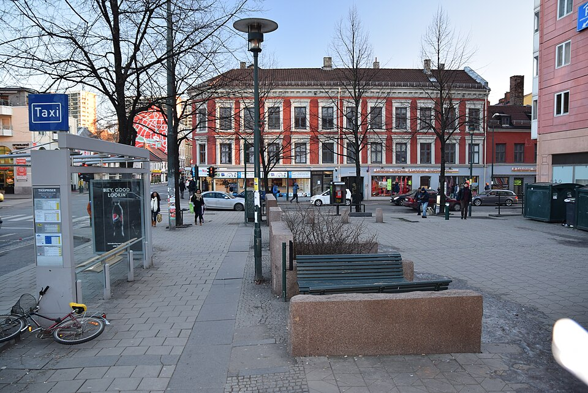

Tøyenbekken × Grønlandsleiret
Grønland · Oslo
Grønland · Oslo
59.9126° N / 10.7616° E
Steam & hot water
Road rupture
Police cordon
04 NOVEMBER 2026 / AN ILLUSTRATED RECONSTRUCTION
DRAG TO ORBIT · SCROLL TO ZOOM
Field references
Event photographs + an earlier view of the ordinary street
Everyday street, 2015Helge Høifødt · CC BY-SA 4.0 The eruption · see photos ↗Robert Eik · Nettavisen Visible across the city ↗Per Karstein Henrichs · Vårt Oslo The damaged roadway ↗Hans Christian Olsen Harvei · TV 2 Inside the cordon ↗Ismail Hussein · Vårt OsloThe 2015 street photograph is by Helge Høifødt, CC BY-SA 4.0, shown here unmodified at reduced size. Incident-photo cards link to the publishers; no incident photographs are hosted on this site.